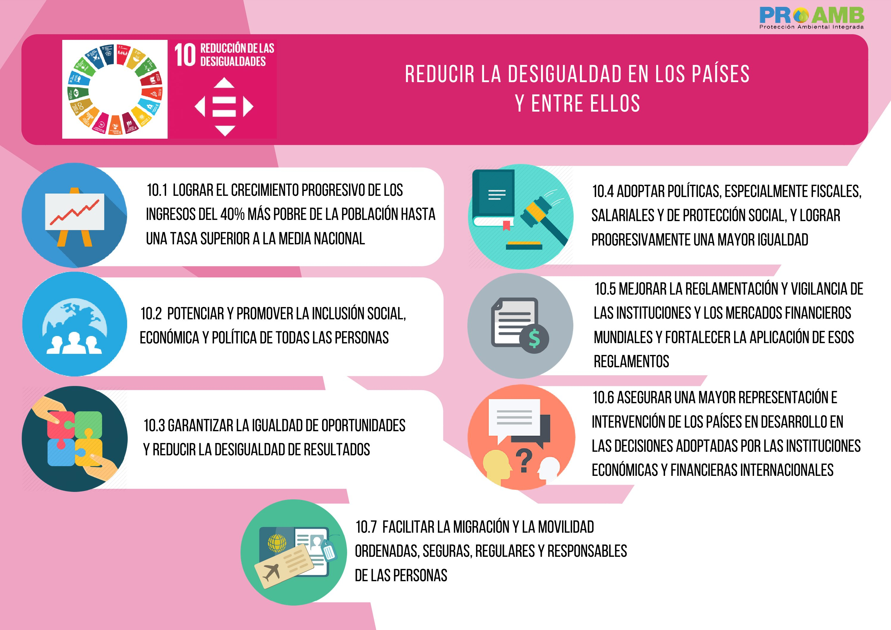

Objetivo de desarrollo sostenible 10:
Reducir las desigualdades
Descripción
El ODS 10 promueve la inclusión social, económica y política de todos, independientemente de su edad, género, discapacidad, raza, etnia, origen, religión, condición económica o de otro tipo. Además, pretende garantizar la igualdad de oportunidades y reducir las desigualdades, en particular eliminando leyes, políticas y prácticas discriminatorias y promoviendo leyes, políticas y acciones apropiadas a este respecto.
Importancia de la ODS 10: Reducir las desigualdades
La desigualdad dentro y entre los países es un motivo de preocupación constante. A pesar de la existencia de algunos signos positivos, la pandemia de COVID-19 ha exacerbado las desigualdades existentes y afectado a las comunidades más vulnerables, aumentando significativamente el desempleo global y reduciendo drásticamente los ingresos de los trabajadores.
De hecho, según Naciones Unidas, la COVID-19 pone en peligro los escasos avances ya logrados en materia de igualdad de género y derechos de las mujeres durante las últimas décadas. Prácticamente en todos los ámbitos, desde la salud hasta la economía, desde la seguridad hasta la protección social, los efectos de la COVID-19 han empeorado la situación de las mujeres y las niñas.Esto también se aplica a las poblaciones vulnerables en países con sistemas de salud más deficientes y en países que enfrentan crisis humanitarias en curso. Según las Naciones Unidas (ONU), más de mil millones de residentes en barrios marginales de todo el mundo corren un grave riesgo por los efectos del COVID-19. Es el caso de la falta de vivienda adecuada y de agua corriente en los hogares, de baños compartidos, de la escasez o ausencia de sistemas de gestión de residuos, de la saturación del transporte público y del limitado acceso a los establecimientos sanitarios oficiales. Los refugiados y migrantes, así como los pueblos indígenas, los ancianos, las personas con discapacidad y los niños corren un riesgo especial de ser excluidos. Ante esta situación, promover la inclusión social, económica y política de todos, así como garantizar la igualdad de oportunidades y reducir la desigualdad, se ha materializado como ODS 10 de los 17 Objetivos de Desarrollo Sostenible de la ONU, aprobados en septiembre de 2015 durante la Cumbre de Desarrollo Sostenible, una reunión donde más de 150 Jefes de Estado y de Gobierno aprobaron la conocida Agenda 2030.
Y por si eres de los que no les gusta leer mucho, aquí te tenemos un excelente resumen de las metas de la ODS 10:
¿Ya pensaste como puedes ayudar para reduzir las desigualdades de tu entorno?
Créditos:
www.iberdrola.com
www.agenda2030lac.org
www.zerocarbon.com